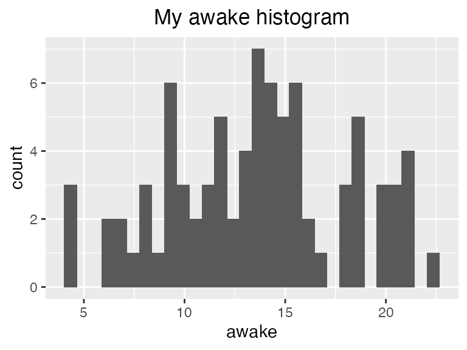

We use the term theme in the grammar of graphics to refer to all non-data components of a plot, including things like “where is the title placed?”, “how large is the axis text?”, “does the plot have a grid and how spaced out is the grid?”, “is there a background fill to the plot canvas itself?”, etc.
Themes are comprised of several different types of elements:
element_text(): How do certain text elements appear?
axis.title (axes titles) is an element_text().colorsizeface : “plain”, “italic”, “bold”, or "bold.italic)anglehjust : “horizontal justification” where 0 is far left, 0.5 is middle, and 1 is far right, and anything in between!vjust : “vertical justification” where 0 is bottom, 0.5 is middle, and 1 is top, and anything in between!)element_line(): How do certain line elements appear?
axis.line (axis lines themselves) is an element_line().color, size, linetype (“solid”, “dashed”, “dotted”, “dotdash”, “longdash”, and “twodash”), and lineend (“round”, “butt”, “square”).element_rect(): How do certain borders and background elements in the plot appear?
plot.background (the background/“canvas” appearance of the plot) is an element_rect().colorfillsize (of the outline)linetype (“solid”, “dashed”, “dotted”, “dotdash”, “longdash”, and “twodash”)unit(): Some theme components are not strictly elements but are defined in terms of size only and will be termed unit() or grid::unit().All theme components can be fully customized using the theme() function, as is overwhelmingly documented here. There are also several existing complete themes in ggplot2, which can be used “out of the box” if you want something different but without further customization, examples for which are shown in this tutorial.
All examples in this tutorial will modify a version of this plot, which uses the default theme_gray() with no further customization. The plot is made with the msleep dataset. Note that the examples generally do not make well-styled plots! The modified theme elements are intentionally strong to demonstrate the concepts, not because they look pretty.
ggplot(msleep) +
aes(x = awake) +
geom_histogram()When customizing a theme, you need to:
ggplot2 refers to the particular plot component you want to change.element_text(), element_line(), or element_rect().
theme() function.
rel(). This function will help you change the size of different elements relative to the default baseline.
rel(1.1) means 10% larger than default (110% the size of default), and rel(0.9) means 10% smaller than the default (90% the size of default).element_text()
Let’s see some examples using axis.text1, which controls both X and Y axis text (aka the labels along the axes, NOT the title). Customizing axis.text must be paired with element_text(), as it is text!
Make the axis text 50% larger than its default:
ggplot(msleep) +
aes(x = awake) +
geom_histogram() +
#theme( plot-thing-to-change = element_<TYPE>(things to customize about it) )
theme(axis.text = element_text(size = rel(1.5)))
Make the axis text 50% smaller than its default:
ggplot(msleep) +
aes(x = awake) +
geom_histogram() +
theme(axis.text = element_text(size = rel(0.5)))
Make the axis text red, and 15% larger than default:
ggplot(msleep) +
aes(x = awake) +
geom_histogram() +
theme(axis.text = element_text(color = "red", size = rel(1.15)))
Let’s change a whole bunch of things! Change baseline theme to theme_light(), make BOTH X- and Y- axis have 15% larger font size, make the X-axis text blue, and make the Y-axis text purple.
ggplot(msleep) +
aes(x = awake) +
geom_histogram() +
theme_light() +
theme(axis.text = element_text(size = rel(1.15)), # both axes
axis.text.x = element_text(color = "blue"), # only the x!
axis.text.y = element_text(color = "purple")) # only the y!
You can REMOVE theme elements entirely with element_blank(). The example below is obviously bad plot design, but shows how to get the job done if you wanted to!
ggplot(msleep) +
aes(x = awake) +
geom_histogram() +
theme(axis.text = element_blank())
Rotate the text by a 90% angle
ggplot(msleep) +
aes(x = awake) +
geom_histogram() +
theme(axis.text = element_text(angle = 90))element_rect()
Change the background fill of the plot:
ggplot(msleep) +
aes(x = awake) +
geom_histogram() +
theme(plot.background = element_rect(fill = "pink"))
Change the background fill of the plot PANEL with panel.backgroud:
ggplot(msleep) +
aes(x = awake) +
geom_histogram() +
theme(panel.background = element_rect(fill = "pink"))
Change the background fill and color (and use size to increase line thickness) of the facet (panel) strips:
ggplot(msleep) +
aes(x = awake) +
geom_histogram() +
# Add faceting
facet_wrap(vars(vore), nrow = 1) +
theme(strip.background = element_rect(fill = "pink",
color = "blue",
size = rel(4)))element_line()
Change the axis thickness (multiply default size by 2) and color, why not!
ggplot(msleep) +
aes(x = awake) +
geom_histogram() +
theme(axis.line = element_line(size = rel(2), color = "purple"))
Change the background grid to blue!
ggplot(msleep) +
aes(x = awake) +
geom_histogram() +
theme(panel.grid = element_line(color = "blue"))
Remove the minor grid lines (still blue to help you see the difference)
ggplot(iris, aes(x = Sepal.Length)) +
geom_histogram() +
theme(panel.grid = element_line(color = "blue"),
panel.grid.minor = element_blank())unit()
Legend components commonly use unit(), which takes two arguments: the target size, and the unit of the target size. There are many units for size, but some popular ones are "cm" and "inches"!
For example, we might want to change the size of the legend keys to make them smaller:
ggplot(msleep) +
aes(x = awake, fill = vore) +
geom_histogram(color = "black") +
facet_wrap(vars(vore)) +
theme(legend.key.size = unit(0.2, "cm"))Or larger!
ggplot(msleep) +
aes(x = awake, fill = vore) +
geom_histogram(color = "black") +
facet_wrap(vars(vore)) +
theme(legend.key.size = unit(1, "cm"))You can continue to add features, including theme changes, to a plot once it is created. For example:
ggplot(msleep) +
aes(x = awake) +
geom_histogram() +
labs(title = "My awake histogram") -> awake_histogram # save plot to variable
# Add some theme changes to it, without changing the definition of `iris_histogram`
awake_histogram +
# moves title to top-MIDDLE of the plot instead of the default top-left
theme(plot.title = element_text(hjust = 0.5)) 
As you will notice when perusing the documentation, there is also axis.text.x and axis.text.y which can be used to separately customize X and Y axis text.↩︎